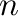

Next: Excluded pairs Up: Restraints file Previous: Restraints file Contents Index
R Form Modality Feature Group Numb_atoms Numb_parameters Numb_Feat (Modal2 Feat2 NumAt2 ...) Atom_indices Parameters
These parameters encode the restraints information as given in Section 5.3.
Here, Form is the restraint form type (see Table B.1). Modality is an integer argument to Form, and specifies the number of single Gaussians in a poly-Gaussian pdf, number of terms in a multiple binormal, periodicity  of the cosine in the cosine potential, and the number of spline points for cubic splines. Feature is the feature that this restraint acts on (see Table B.2.) Group is the physical feature type, and should be an index from Table 6.1. Numb_atoms is the total number of atoms this restraint acts on, Numb_parameters is the number of defined parameters, and Numb_Feat is the number of features the restraint acts on. Numb_Feat is typically 1, except for the multiple binormal (where it should be 2) and ND spline (where it can be any number). In cases where Numb_Feat is greater than 1, the modality, feature type, and number of atoms of each subsequent feature should be listed in order after Numb_Feat. (Note that Numb_atoms is the number of atoms acted on by the entire restraint, while NumAt2 refers just to the atoms acted on by the 2nd feature.) Finally, the integer atom indices and floating point parameters are listed.
For example,
R 3 1 1 1 2 2 1 437 28 1.5000 0.1000will create a Gaussian restraint on the distance between atoms 437 and 28, with mean of 1.5 and standard deviation of 0.1.
|